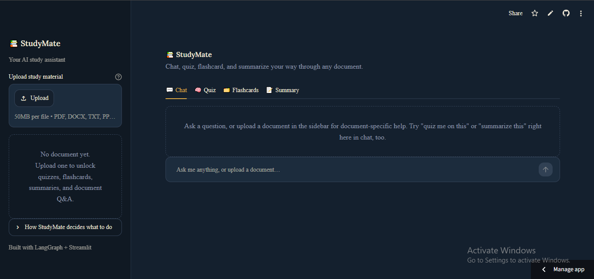

StudyMate AI: RAG Study Assistant
A document-grounded study assistant: chat with your own PDFs, slides, and notes, and generate quizzes, flashcards, and summaries from them, without the model making things up.

Overview
StudyMate AI lets a user upload a document, a PDF, a Word file, a slide deck, or plain text, and interact with it directly: ask questions, request a summary, or generate a quiz or flashcards from its actual content. The point is that every answer is grounded in the uploaded material, not a generic response from the model's training data.
It grew out of an earlier project, a quiz-generating chatbot built with LangChain, LangGraph, and Mistral. That project's tool-discovery system, for automatically finding and running the right LangChain tool for a request, became the foundation for StudyMate's broader agent architecture.
Problem
Reading through long study material to find one answer, or to prepare a quiz to test yourself, is slow. Pointing a generic chatbot at the topic doesn't solve it either: it isn't grounded in what's actually in the specific document, so it can miss details or answer from the wrong context entirely.
The goal was a tool that treats the uploaded document as the source of truth, and gives the user several ways to engage with it (chat, quiz, flashcards, summary) instead of just a single Q&A box.
Solution & Architecture
Uploaded documents go through a processing step that extracts text regardless of source format, then chunking, embedding, and storage in a ChromaDB vector database. At query time, relevant chunks are retrieved and passed to the LLM alongside the user's question.
For short documents, the pipeline can skip retrieval entirely and pass the full text to the LLM. See the routing decision below.
LangGraph routes between modes (chat, quiz generation, flashcards, and hierarchical summarization) based on document size and user intent, as a graph rather than nested conditional logic. LangChain provides the underlying RAG components: loaders, splitters, and retrieval chains.
Technology Stack
Engineering Decisions
Size-aware, intent-aware routing. A LangGraph agent decides which tool to run based on both document size and what the user is asking for, not a fixed pipeline. For documents that fit comfortably in the model's context window, the pipeline sends the full text directly since retrieval only adds latency and can miss relevant context on short documents. Larger documents are chunked, embedded, and indexed in ChromaDB for retrieval-based Q&A instead.
Batch-and-interleave generation for full-document coverage. Generating a quiz from a long document by summarizing it first tends to lose detail. Instead, chunks are batched, questions are generated per batch, and the results are interleaved round-robin with two-stage de-duplication, so a quiz on a long document actually draws from the whole thing rather than just the first few chunks.
Word-level similarity de-duplication. Character-level duplicate detection flags near-identical questions as false positives when they differ by a single word. A word-level similarity check filters actual near-duplicates without over-triggering on superficial differences.
A services layer instead of global state. A DocumentManager and per-session contextvars decouple each tool from global state, so an uploaded document, chat history, and generated quizzes are correctly isolated per user session, with concurrent users never seeing each other's data.
Hierarchical summarization for long documents. Rather than summarizing an entire long document in one pass, summaries are built up from section-level summaries, closer to how a person would actually condense a long document.
Challenges
The main challenge was that a single retrieval strategy doesn't serve every document well. Always retrieving can throw away useful surrounding context on a short document; always using full context is too expensive and slow on a long one. The size-aware routing decision exists specifically because a one-size-fits-all approach produced worse answers in practice.
Generating a complete quiz from a long document was its own problem. Summarizing first and generating questions from the summary is fast, but it silently drops content the summary left out. Batching and interleaving generation across the whole document, then de-duplicating at the word level rather than the character level, fixed both the coverage gap and the near-duplicate questions that came with it.
Handling multiple input formats (PDF, DOCX, PPTX, TXT) consistently before chunking also meant the document-processing step had to normalize very different source structures, slides especially, into plain text without losing the structure that makes a document understandable.
Results
StudyMate AI is a personal project and working prototype, not a deployed product with real users, so there are no usage metrics to report here.
- Tested end-to-end across PDF, DOCX, PPTX, and TXT inputs, from short handouts to full lecture decks.
- Verified the size-aware routing correctly switches between full-context and vector retrieval based on document length.
- Confirmed full-document coverage on long files with the batch-and-interleave generation strategy, instead of only drawing questions from the first few chunks.
- Shipped both a 4-tab Streamlit UI (chat, quiz, flashcards, summary) and a lightweight CLI, backed by the same tools and agent core.
Lessons Learned
RAG isn't a single fixed pipeline. The right retrieval strategy depends on what's being retrieved from, and building the routing logic between full-context and vector retrieval taught me to treat "use RAG" as a design decision with a real trade-off, not a default to reach for on every document regardless of size.
Reusing the tool-discovery system from an earlier project also showed me the value of building the boring infrastructure well the first time. The part of the old chatbot that scaled into something new wasn't a specific feature, it was the plumbing that let new tools plug in cleanly.